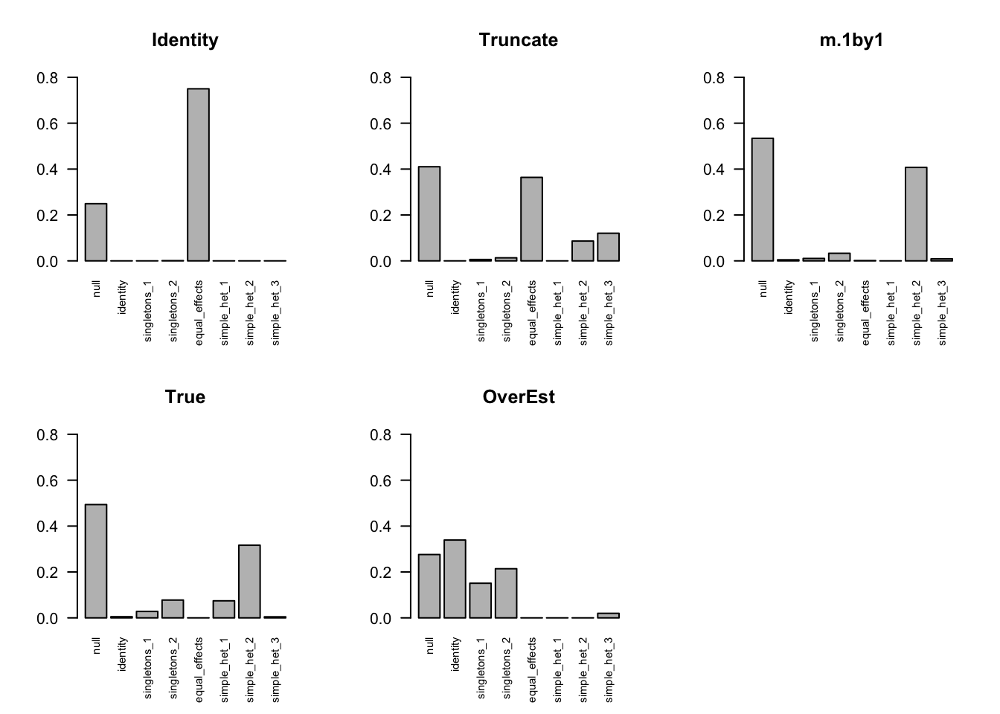

Last updated: 2018-08-20
workflowr checks: (Click a bullet for more information) ✔ R Markdown file: up-to-date
Great! Since the R Markdown file has been committed to the Git repository, you know the exact version of the code that produced these results.
✔ Environment: empty
Great job! The global environment was empty. Objects defined in the global environment can affect the analysis in your R Markdown file in unknown ways. For reproduciblity it’s best to always run the code in an empty environment.
✔ Seed:
set.seed(1)
The command set.seed(1) was run prior to running the code in the R Markdown file. Setting a seed ensures that any results that rely on randomness, e.g. subsampling or permutations, are reproducible.
✔ Session information: recorded
Great job! Recording the operating system, R version, and package versions is critical for reproducibility.
✔ Repository version: a80bf6f
wflow_publish or wflow_git_commit). workflowr only checks the R Markdown file, but you know if there are other scripts or data files that it depends on. Below is the status of the Git repository when the results were generated:
Ignored files:
Ignored: .DS_Store
Ignored: .Rhistory
Ignored: .Rproj.user/
Ignored: analysis/.DS_Store
Ignored: analysis/.Rhistory
Ignored: analysis/figure/
Ignored: analysis/include/.DS_Store
Ignored: data/.DS_Store
Ignored: docs/.DS_Store
Ignored: output/.DS_Store
Untracked files:
Untracked: _workflowr.yml
Untracked: analysis/Classify.Rmd
Untracked: analysis/EstimateCorMaxEM.Rmd
Untracked: analysis/EstimateCorMaxEMGD.Rmd
Untracked: analysis/EstimateCorPrior.Rmd
Untracked: analysis/EstimateCorSol.Rmd
Untracked: analysis/HierarchicalFlashSim.Rmd
Untracked: analysis/MashLowSignal.Rmd
Untracked: analysis/Mash_GTEx.Rmd
Untracked: analysis/MeanAsh.Rmd
Untracked: analysis/OutlierDetection.Rmd
Untracked: analysis/OutlierDetection2.Rmd
Untracked: analysis/OutlierDetection3.Rmd
Untracked: analysis/OutlierDetection4.Rmd
Untracked: analysis/Test.Rmd
Untracked: analysis/mash_missing_row.Rmd
Untracked: code/MashClassify.R
Untracked: code/MashCorResult.R
Untracked: code/MashSource.R
Untracked: code/Weight_plot.R
Untracked: code/addemV.R
Untracked: code/estimate_cor.R
Untracked: code/generateDataV.R
Untracked: code/johnprocess.R
Untracked: code/sim_mean_sig.R
Untracked: code/summary.R
Untracked: data/Blischak_et_al_2015/
Untracked: data/scale_data.rds
Untracked: docs/figure/Classify.Rmd/
Untracked: docs/figure/OutlierDetection.Rmd/
Untracked: docs/figure/OutlierDetection2.Rmd/
Untracked: docs/figure/OutlierDetection3.Rmd/
Untracked: docs/figure/Test.Rmd/
Untracked: docs/figure/mash_missing_whole_row_5.Rmd/
Untracked: docs/include/
Untracked: output/AddEMV/
Untracked: output/CovED_UKBio_strong.rds
Untracked: output/CovED_UKBio_strong_Z.rds
Untracked: output/Flash_UKBio_strong.rds
Untracked: output/MASH.10.em2.result.rds
Untracked: output/MASH.10.mle.result.rds
Untracked: output/MASH.result.1.rds
Untracked: output/MASH.result.10.rds
Untracked: output/MASH.result.2.rds
Untracked: output/MASH.result.3.rds
Untracked: output/MASH.result.4.rds
Untracked: output/MASH.result.5.rds
Untracked: output/MASH.result.6.rds
Untracked: output/MASH.result.7.rds
Untracked: output/MASH.result.8.rds
Untracked: output/MASH.result.9.rds
Untracked: output/Mash_EE_Cov_0_plusR1.rds
Untracked: output/Trail 1/
Untracked: output/Trail 2/
Untracked: output/UKBio_mash_model.rds
Unstaged changes:
Modified: analysis/EstimateCorMaxEM2.Rmd
Modified: analysis/EstimateCorMaxMash.Rmd
Modified: analysis/Mash_UKBio.Rmd
Modified: analysis/_site.yml
Modified: analysis/chunks.R
Modified: analysis/mash_missing_samplesize.Rmd
Modified: output/Flash_T2_0.rds
Modified: output/Flash_T2_0_mclust.rds
Modified: output/Mash_model_0_plusR1.rds
Modified: output/PresiAddVarCol.rds
| File | Version | Author | Date | Message |
|---|---|---|---|---|
| Rmd | a80bf6f | zouyuxin | 2018-08-20 | wflow_publish(“analysis/EstimateCor.Rmd”) |
| html | 6281062 | zouyuxin | 2018-08-15 | Build site. |
| Rmd | 3e3e128 | zouyuxin | 2018-08-15 | wflow_publish(c(“analysis/EstimateCor.Rmd”, “analysis/EstimateCorMax.Rmd”, |
| html | 05731eb | zouyuxin | 2018-08-15 | Build site. |
| Rmd | ccc1607 | zouyuxin | 2018-08-15 | wflow_publish(c(“analysis/EstimateCorIndex.Rmd”, “analysis/EstimateCor.Rmd”)) |
| html | 568fbe6 | zouyuxin | 2018-08-13 | Build site. |
| Rmd | 3ae3f08 | zouyuxin | 2018-08-13 | wflow_publish(c(“analysis/EstimateCor.Rmd”, |
| html | 10d4174 | zouyuxin | 2018-08-13 | Build site. |
| Rmd | b8c1cd8 | zouyuxin | 2018-08-13 | wflow_publish(“analysis/EstimateCor.Rmd”) |
| html | 3bfa4f5 | zouyuxin | 2018-08-13 | Build site. |
| Rmd | 49d53fb | zouyuxin | 2018-08-13 | wflow_publish(“analysis/EstimateCor.Rmd”) |
| html | 6e4f0a1 | zouyuxin | 2018-08-03 | Build site. |
| Rmd | c330f07 | zouyuxin | 2018-08-03 | wflow_publish(c(“analysis/EstimateCor.Rmd”)) |
| html | 2985466 | zouyuxin | 2018-07-26 | Build site. |
| Rmd | e2c5ebd | zouyuxin | 2018-07-26 | wflow_publish(“analysis/EstimateCor.Rmd”) |
library(mashr)Loading required package: ashrlibrary(knitr)
library(kableExtra)
source('../code/generateDataV.R')
source('../code/summary.R')We illustrate the problem about estimating the correlation matrix in mashr.
In my simple simulation, the current approach underestimates the null correlation. We want to find better positive definite estimator. We could try to estimate the pairwise correlation, ie. mle of \(\sum_{l,k} \pi_{lk} N_{2}(0, V + w_{l}U_{k})\) for any pair of conditions.
Simple simulation in \(R^2\) to illustrate the problem: \[ \hat{\beta}|\beta \sim N_{2}(\hat{\beta}; \beta, \left(\begin{matrix} 1 & 0.5 \\ 0.5 & 1 \end{matrix}\right)) \]
\[ \beta \sim \frac{1}{4}\delta_{0} + \frac{1}{4}N_{2}(0, \left(\begin{matrix} 1 & 0 \\ 0 & 0 \end{matrix}\right)) + \frac{1}{4}N_{2}(0, \left(\begin{matrix} 0 & 0 \\ 0 & 1 \end{matrix}\right)) + \frac{1}{4}N_{2}(0, \left(\begin{matrix} 1 & 1 \\ 1 & 1 \end{matrix}\right)) \]
\(\Rightarrow\) \[ \hat{\beta} \sim \frac{1}{4}N_{2}(0, \left( \begin{matrix} 1 & 0.5 \\ 0.5 & 1 \end{matrix} \right)) + \frac{1}{4}N_{2}(0, \left( \begin{matrix} 2 & 0.5 \\ 0.5 & 1 \end{matrix} \right)) + \frac{1}{4}N_{2}(0, \left( \begin{matrix} 1 & 0.5 \\ 0.5 & 2 \end{matrix} \right)) + \frac{1}{4}N_{2}(0, \left( \begin{matrix} 2 & 1.5 \\ 1.5 & 2 \end{matrix} \right)) \]
n = 4000
set.seed(1)
n = 4000; p = 2
Sigma = matrix(c(1,0.5,0.5,1),p,p)
U0 = matrix(0,2,2)
U1 = U0; U1[1,1] = 1
U2 = U0; U2[2,2] = 1
U3 = matrix(1,2,2)
Utrue = list(U0=U0, U1=U1, U2=U2, U3=U3)
data = generate_data(n, p, Sigma, Utrue)Let’s check the result of mash under different correlation matrix:
m.data = mash_set_data(data$Bhat, data$Shat)
U.c = cov_canonical(m.data)
m.I = mash(m.data, U.c, verbose= FALSE)Vhat = estimate_null_correlation(m.data, apply_lower_bound = FALSE)
Vhat [,1] [,2]
[1,] 1.0000000 0.3439205
[2,] 0.3439205 1.0000000It underestimates the correlation.
# Use underestimate cor
m.data.V = mash_set_data(data$Bhat, data$Shat, V=Vhat)
m.V = mash(m.data.V, U.c, verbose = FALSE)# If we overestimate cor
V.o = matrix(c(1,0.65,0.65,1),2,2)
m.data.Vo = mash_set_data(data$Bhat, data$Shat, V=V.o)
m.Vo = mash(m.data.Vo, U.c, verbose=FALSE)We run ash for each condition, and estimate correlation matrix based on the non-significant genes. The estimated cor is closer to the truth.
m.1by1 = mash_1by1(m.data)
strong = get_significant_results(m.1by1)
V.mash = cor(data$Bhat[-strong,])
V.mash [,1] [,2]
[1,] 1.0000000 0.4597745
[2,] 0.4597745 1.0000000m.data.1by1 = mash_set_data(data$Bhat, data$Shat, V=V.mash)
m.V1by1 = mash(m.data.1by1, U.c, verbose = FALSE)# With correct cor
m.data.correct = mash_set_data(data$Bhat, data$Shat, V=Sigma)
m.correct = mash(m.data.correct, U.c, verbose = FALSE)The results are summarized in table:
null.ind = which(apply(data$B,1,sum) == 0)
V.trun = c(get_loglik(m.V), length(get_significant_results(m.V)), sum(get_significant_results(m.V) %in% null.ind))
V.I = c(get_loglik(m.I), length(get_significant_results(m.I)), sum(get_significant_results(m.I) %in% null.ind))
V.over = c(get_loglik(m.Vo), length(get_significant_results(m.Vo)), sum(get_significant_results(m.Vo) %in% null.ind))
V.1by1 = c(get_loglik(m.V1by1), length(get_significant_results(m.V1by1)), sum(get_significant_results(m.V1by1) %in% null.ind))
V.correct = c(get_loglik(m.correct), length(get_significant_results(m.correct)), sum(get_significant_results(m.correct) %in% null.ind))
temp = cbind(V.I, V.trun, V.1by1, V.correct, V.over)
colnames(temp) = c('Identity','truncate', 'm.1by1', 'true', 'overestimate')
row.names(temp) = c('log likelihood', '# significance', '# False positive')
temp %>% kable() %>% kable_styling()| Identity | truncate | m.1by1 | true | overestimate | |
|---|---|---|---|---|---|
| log likelihood | -12390.14 | -12307.65 | -12304.13 | -12302.62 | -12301.81 |
| # significance | 166.00 | 30.00 | 25.00 | 25.00 | 70.00 |
| # False positive | 14.00 | 1.00 | 0.00 | 0.00 | 4.00 |
The estimated pi is
par(mfrow=c(2,3))
barplot(get_estimated_pi(m.I), las=2, cex.names = 0.7, main='Identity', ylim=c(0,0.8))
barplot(get_estimated_pi(m.V), las=2, cex.names = 0.7, main='Truncate', ylim=c(0,0.8))
barplot(get_estimated_pi(m.V1by1), las=2, cex.names = 0.7, main='m.1by1', ylim=c(0,0.8))
barplot(get_estimated_pi(m.correct), las=2, cex.names = 0.7, main='True', ylim=c(0,0.8))
barplot(get_estimated_pi(m.Vo), las=2, cex.names = 0.7, main='OverEst', ylim=c(0,0.8))
| Version | Author | Date |
|---|---|---|
| 10d4174 | zouyuxin | 2018-08-13 |
| 3bfa4f5 | zouyuxin | 2018-08-13 |
| 2985466 | zouyuxin | 2018-07-26 |
The ROC curve:
m.I.seq = ROC.table(data$B, m.I)
m.V.seq = ROC.table(data$B, m.V)
m.Vo.seq = ROC.table(data$B, m.Vo)
m.V1by1.seq = ROC.table(data$B, m.V1by1)
m.correct.seq = ROC.table(data$B, m.correct)| Version | Author | Date |
|---|---|---|
| 10d4174 | zouyuxin | 2018-08-13 |
| 3bfa4f5 | zouyuxin | 2018-08-13 |
| 2985466 | zouyuxin | 2018-07-26 |
Comparing accuracy
rrmse = rbind(RRMSE(data$B, data$Bhat, list(m.I = m.I, m.V = m.V, m.1by1 = m.V1by1, m.true = m.correct, m.over = m.Vo)))
colnames(rrmse) = c('Identity','V.trun','V.1by1','V.true','V.over')
row.names(rrmse) = 'RRMSE'
rrmse %>% kable() %>% kable_styling()| Identity | V.trun | V.1by1 | V.true | V.over | |
|---|---|---|---|---|---|
| RRMSE | 0.6522463 | 0.5925754 | 0.5811472 | 0.5817699 | 0.6052702 |
barplot(rrmse, ylim=c(0,(1+max(rrmse))/2), las=2, cex.names = 0.7, main='RRMSE')Suppose a simple extreme case \[ \left(\begin{matrix} \hat{x} \\ \hat{y} \end{matrix} \right)| \left(\begin{matrix} x \\ y \end{matrix} \right) \sim N_{2}(\left(\begin{matrix} \hat{x} \\ \hat{y} \end{matrix} \right); \left(\begin{matrix} x \\ y \end{matrix} \right), \left( \begin{matrix} 1 & \rho \\ \rho & 1 \end{matrix}\right)) \] \[ \left(\begin{matrix} x \\ y \end{matrix} \right) \sim \delta_{0} \] \(\Rightarrow\) \[ \left(\begin{matrix} \hat{x} \\ \hat{y} \end{matrix} \right) \sim N_{2}(\left(\begin{matrix} \hat{x} \\ \hat{y} \end{matrix} \right); \left(\begin{matrix} 0 \\ 0 \end{matrix} \right), \left( \begin{matrix} 1 & \rho \\ \rho & 1 \end{matrix}\right)) \]
\[ f(\hat{x},\hat{y}) = \prod_{i=1}^{n} \frac{1}{2\pi\sqrt{1-\rho^2}} \exp \{-\frac{1}{2(1-\rho^2)}\left[ \hat{x}_{i}^2 + \hat{y}_{i}^2 - 2\rho \hat{x}_{i}\hat{y}_{i}\right] \} \] The MLE of \(\rho\): \[ \begin{align*} l(\rho) &= -\frac{n}{2}\log(1-\rho^2) - \frac{1}{2(1-\rho^2)}\left( \sum_{i=1}^{n} x_{i}^2 + y_{i}^2 - 2\rho x_{i}y_{i} \right) \\ l(\rho)' &= \frac{n\rho}{1-\rho^2} - \frac{\rho}{(1-\rho^2)^2} \sum_{i=1}^{n} (x_{i}^2 + y_{i}^2) + \frac{\rho^2 + 1}{(1-\rho^2)^2} \sum_{i=1}^{n} x_{i}y_{i} = 0 \\ &= \rho^{3} - \rho^{2}\frac{1}{n}\sum_{i=1}^{n} x_{i}y_{i} - \left( 1- \frac{1}{n} \sum_{i=1}^{n} x_{i}^{2} + y_{i}^{2} \right) \rho - \frac{1}{n}\sum_{i=1}^{n} x_{i}y_{i} = 0 \\ l(\rho)'' &= \frac{n(\rho^2+1)}{(1-\rho^2)^2} - \frac{1}{2}\left( \frac{8\rho^2}{(1-\rho^2)^{3}} + \frac{2}{(1-\rho^2)^2} \right)\sum_{i=1}^{n}(x_{i}^2 + y_{i}^2) + \{ \left( \frac{8\rho^2}{(1-\rho^2)^{3}} + \frac{2}{(1-\rho^2)^2} \right)\rho + \frac{4\rho}{(1-\rho^2)^2} \}\sum_{i=1}^{n}x_{i}y_{i} \end{align*} \]
The log likelihood is not a concave function in general. The score function has either 1 or 3 real solutions.
Kendall and Stuart (1979) noted that at least one of the roots is real and lies in the interval [−1, 1]. However, it is possible that all three roots are real and in the admissible interval, in which case the likelihood can be evaluated at each root to determine the true maximum likelihood estimate.
I simulate the data with \(\rho=0.6\) and plot the loglikelihood function:
| Version | Author | Date |
|---|---|---|
| 568fbe6 | zouyuxin | 2018-08-13 |
\(l(\rho)'\) has one real solution
polyroot(c(- sum(data$Bhat[,1]*data$Bhat[,2]), - (n - sum(data$Bhat[,1]^2 + data$Bhat[,2]^2)), - sum(data$Bhat[,1]*data$Bhat[,2]), n))[1] 0.6193031+0.000000i 0.0058209+1.009339i 0.0058209-1.009339iThe general derivation is in estimate correlation mle
sessionInfo()R version 3.5.1 (2018-07-02)
Platform: x86_64-apple-darwin15.6.0 (64-bit)
Running under: macOS High Sierra 10.13.6
Matrix products: default
BLAS: /Library/Frameworks/R.framework/Versions/3.5/Resources/lib/libRblas.0.dylib
LAPACK: /Library/Frameworks/R.framework/Versions/3.5/Resources/lib/libRlapack.dylib
locale:
[1] en_US.UTF-8/en_US.UTF-8/en_US.UTF-8/C/en_US.UTF-8/en_US.UTF-8
attached base packages:
[1] stats graphics grDevices utils datasets methods base
other attached packages:
[1] kableExtra_0.9.0 knitr_1.20 mashr_0.2-11 ashr_2.2-10
loaded via a namespace (and not attached):
[1] Rcpp_0.12.18 highr_0.7 pillar_1.3.0
[4] compiler_3.5.1 git2r_0.23.0 plyr_1.8.4
[7] workflowr_1.1.1 R.methodsS3_1.7.1 R.utils_2.6.0
[10] iterators_1.0.10 tools_3.5.1 digest_0.6.15
[13] viridisLite_0.3.0 tibble_1.4.2 evaluate_0.11
[16] lattice_0.20-35 pkgconfig_2.0.1 rlang_0.2.1
[19] Matrix_1.2-14 foreach_1.4.4 rstudioapi_0.7
[22] yaml_2.2.0 parallel_3.5.1 mvtnorm_1.0-8
[25] xml2_1.2.0 httr_1.3.1 stringr_1.3.1
[28] REBayes_1.3 hms_0.4.2 rprojroot_1.3-2
[31] grid_3.5.1 R6_2.2.2 rmarkdown_1.10
[34] rmeta_3.0 readr_1.1.1 magrittr_1.5
[37] whisker_0.3-2 scales_0.5.0 backports_1.1.2
[40] codetools_0.2-15 htmltools_0.3.6 MASS_7.3-50
[43] rvest_0.3.2 assertthat_0.2.0 colorspace_1.3-2
[46] stringi_1.2.4 Rmosek_8.0.69 munsell_0.5.0
[49] doParallel_1.0.11 pscl_1.5.2 truncnorm_1.0-8
[52] SQUAREM_2017.10-1 crayon_1.3.4 R.oo_1.22.0 This reproducible R Markdown analysis was created with workflowr 1.1.1